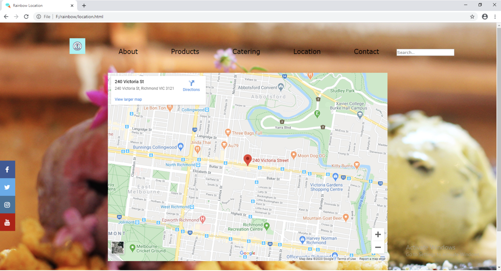
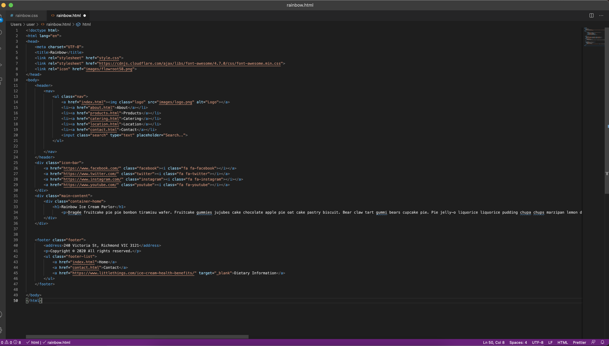
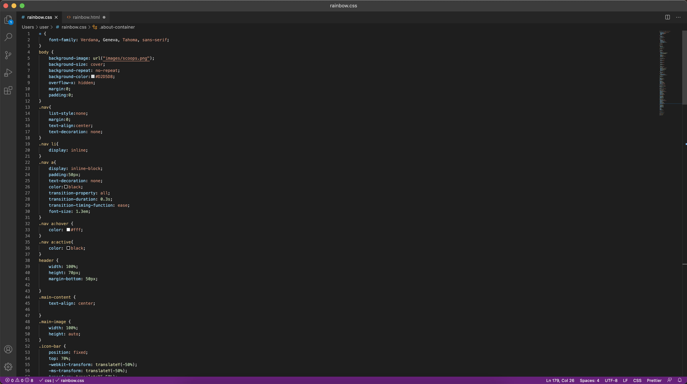

A static site made with HTML and CSS
A school assignment

A school assignment
This site was made of a school assignment in which we were directed to create a business website. It has 5 pages that all draw from the same CSS file.
The business was a fictional ice cream parlour in Melbourne. I made a navbar, a footer, and the social media icons sidebar.
I also included a map to the supposed location.
I don't have this project on Github yet, so here's a look at the code.
